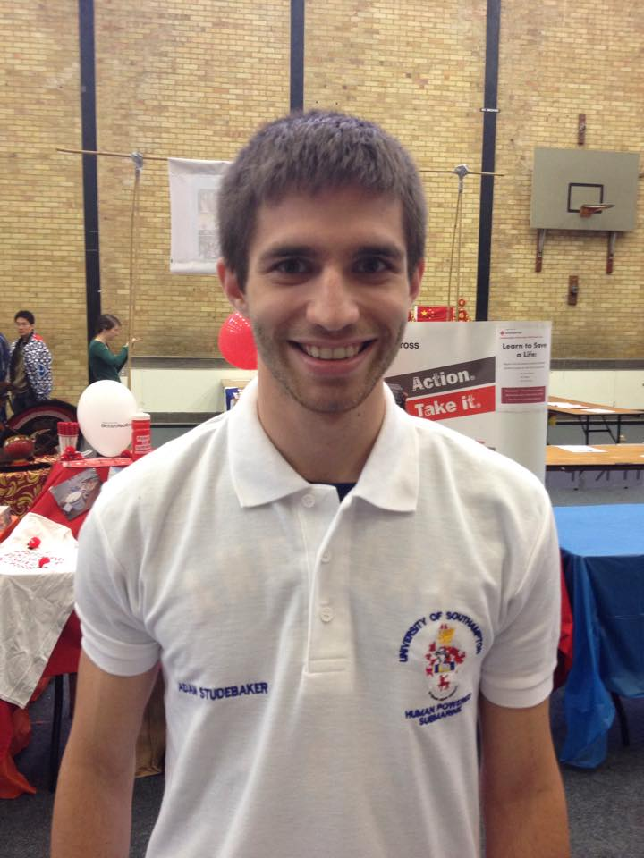

Committee
| Adam Studebaker President |
Shruti Verma Secretary |
Sarah Neenan Engineering Officer |
Alex Holt Finance Officer |
|||
|---|---|---|---|---|---|---|
|  |  |
 |
 |
|||
| 3rd year Aeronautics and Astronautics | 3rd year Aeronautics and Astronautics | 3rd year Engineering Doctorate & part time MBA | 2nd year Ship Science | |||
| Hello! I'm Adam, the Founder and President of SUHPS. I administer the society as a whole and act as a point of contact for external organisations. I work to fulfil the aims and objectives of the society while leading long-term development. | I'm Shruti and as Secretary for SUHPS I am running the Marketing subteam. Over the year we will be working to obtain sponsorship and finances by getting in contact with companies and fundraising. We will also being raising our presence both online and on campus to expand the team and get more people interested in what we're doing! | I oversee the engineering sub-teams and take a project management role, ensuring design and manufacturing runs smoothly and we meet all competition deadlines. I also organise and oversea diver and pilot training. | It's my job to look after the team's finances - From purchasing the smallest part for the submarine, right up to flights, sponsorship and more. I also work closely with the marketing team and the other committee members, as well as helping out the various engineering teams. |